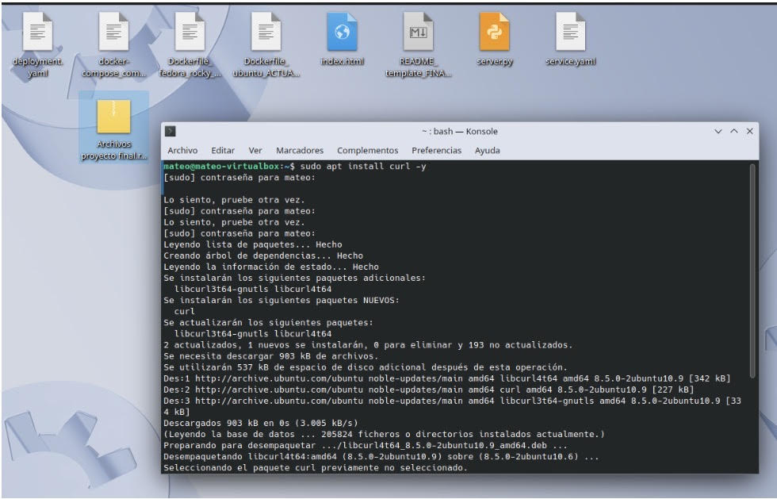
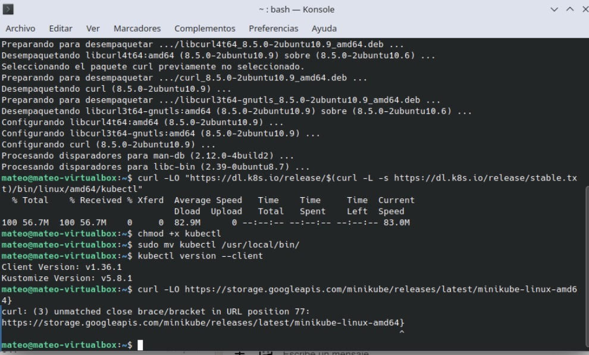
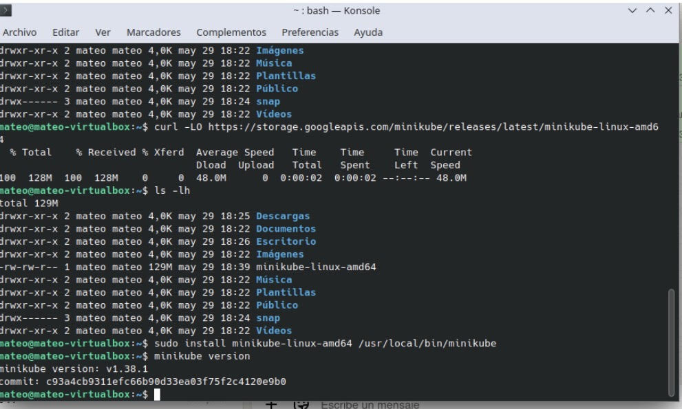
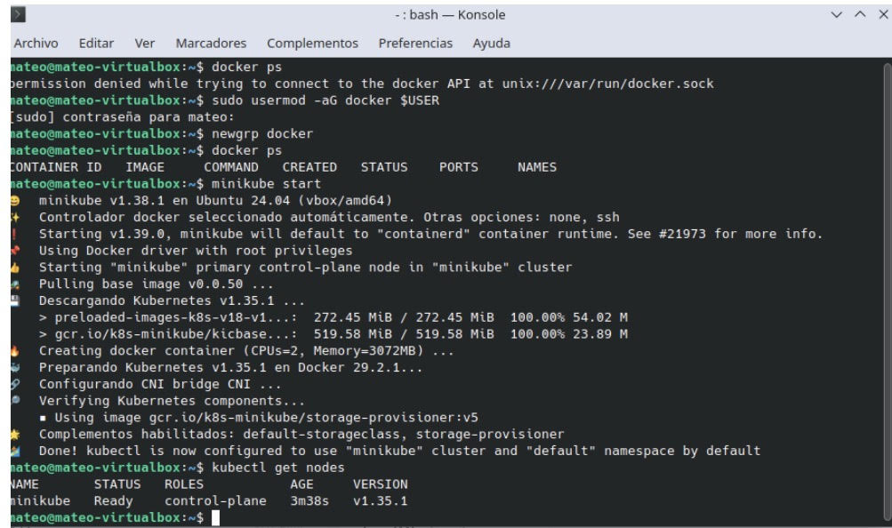
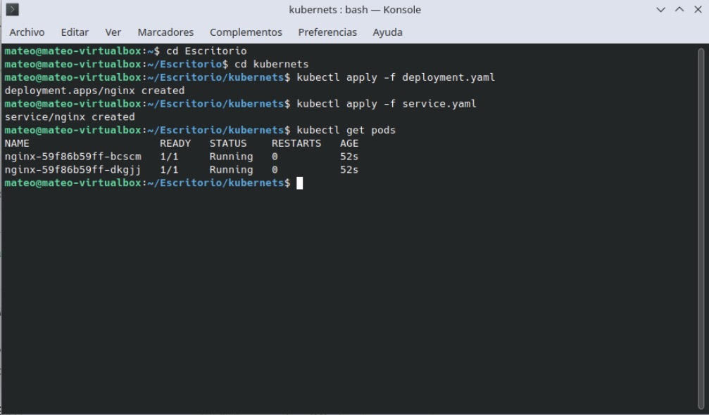
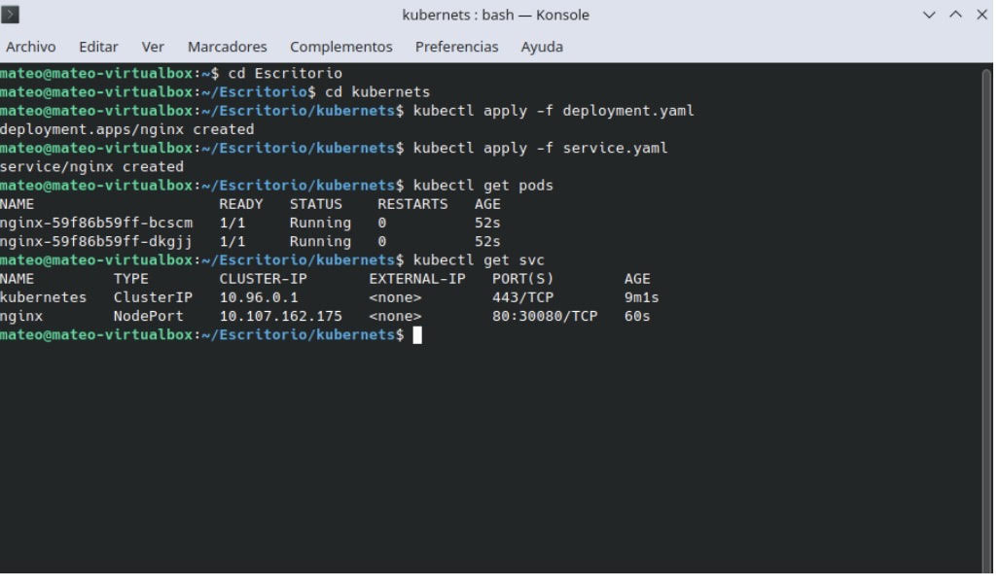
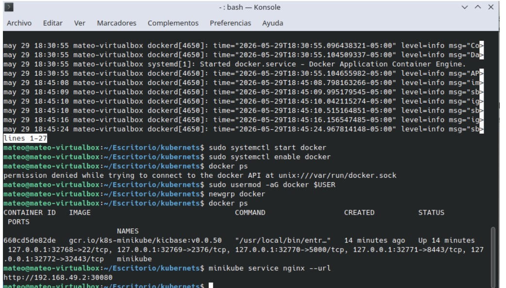
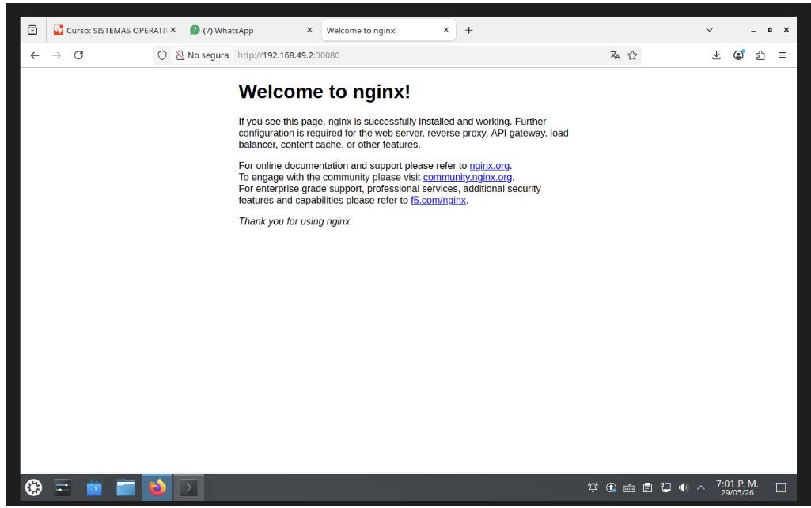

instalar kubectl para darle ordenes a los kubenets con “sudo apt install curl -y”, “curl -LO "https://dl.k8s.io/release/$(curl -L -s https://dl.k8s.io/release/stable.txt)/bin/linux/amd64/kubectl”",
“chmod +x kubectl” y “sudo mv kubectl /usr/local/bin/” , luego de verifica la version con “kubectl version --client”


Instalar Minikube “curl -LO https://storage.googleapis.com/minikube/releases/latest/minikube-linux-amd64”, “sudo install minikube-linux-amd64 /usr/local/bin/minikube” y verificar versión “minikube version”

iniciar Kubernets “minikube start” y verificar que funciona “kubectl get nodes”

aplicar los yalm ”kubectl apply -f deployment.yaml” y “kubectl apply -f service.yaml”

Verificar pods con “kubectl get pods” y verificar servicio con “kubectl get svc”

verificar URL “minikube service nginx --url”, antes de verificar la URL se tuvo que inicar de nuevo el docker

Acceso desde navegador con http://192.168.49.2:30080 que fue la URL que devolvió “minikube service nginx --url”

escalar a 3 réplicas con “kubectl scale deployment nginx --replicas=3” y verificar el escalado con “kubectl get pods”